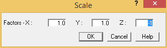

Scaling, Moving, and Stretching
In this section you will learn how to re-position and re-scale existing segments.
- Earlier we demonstrated how to use the Select Segment command. You can also manually select a segment by selecting a range that encompasses all the points. Pick point A07, then hold down the [Shift] key and pick point C02. Segment C is highlighted as shown in the following figure.
- Select Home > Operations > Scale. The Scale dialog is displayed as shown in the following figure.

- Tab twice to the Z Factor field and enter - 1 to specify that the selected range should be moved to the opposite Z-axis.
- Press OK to close the dialog. The model appears as shown in the following figure.
- Segment C should still be highlighted. You are now going to add Segment A to the selection set and move Segments A and C in the Z direction. Doing so will automatically cause the length of the connecting segments to stretch. With Segment C still highlighted, press the Ctrl key on your keyboard and select the anchor at point A00. After selecting the point, press the Shift key and
select the anchor at the opposite end of the segment at point A09. Segments A and C should now be highlighted as shown in the following figure.